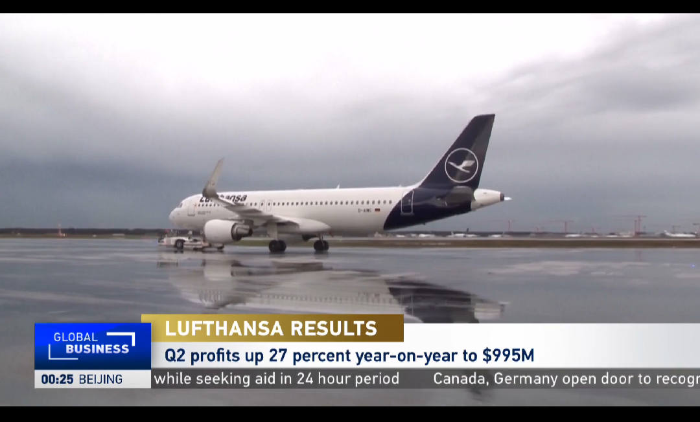
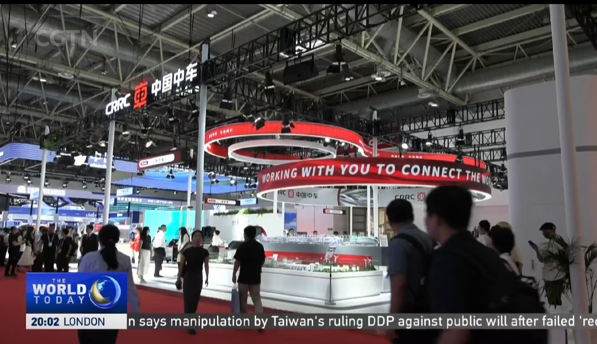

tsy的前世今生
tsy常驻重庆主城区,是金牛座,小学是人小,不卷(你要让我评价我那个班的话...)
抽签到了XDFZ,又奇妙的空降到了人工智能班,初一下就是C++信息竞赛生,
半学期后成功被踢(悲),
自学一点OI以外的函数,自学html,
这个网页是tsy自己写的
按ctrl+U可以看我的html源码,瘟锌锑逝:复制没有用的
(tips:tsy不是玩ys或王者的)
我英语很好(不要把我跟考148的那个比(╬▔皿▔)╯!!!),
要学习的参见skill界面


猜猜为啥我英语那么好(其实我一句话只听得懂1/3)
数学成绩....能看就行,语文嘛,多少分自己脑补
我喜欢的
↑反思一下为什么看到这样的标题你那么兴奋
是个飞友,车迷(此车非彼车),只会1%的象棋所以百战百fail,,
什么is飞友和车迷?上面的图我已经告诉你了
没有BBC喜欢用代码弄些奇怪的东西,例如
跟电脑下井字棋
(请使用windows端打开,否则会出现调用不一致)